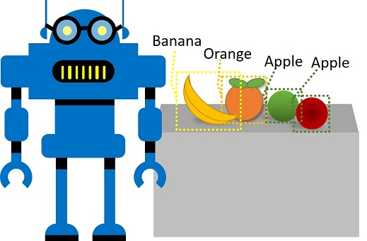

Detec√ß√£o de objeto √© uma forma de visão computacional na qual um modelo de aprendizado de máquina √© treinado para classificar inst√¢ncias individuais de objetos em uma imagem e indicar uma caixa delimitadora que marca sua localiza√ß√£o. Voc√™ pode pensar nisso como uma progressão da Classifica√ß√£o da imagem (na qual o modelo responde √† pergunta “O que √© uma imagem?”) Para criar solu√ß√µes onde podemos perguntar ao modelo “Quais objetos estão nesta imagem e onde estão eles?”.

Por exemplo, um supermercado pode usar um modelo de detecção de objetos para implementar um sistema de check -out automatizado que digitalize uma correia transportadora usando uma câmera e pode identificar itens específicos sem a necessidade de colocar cada item na correia e digitalizá -los individualmente.
O Visão Custom Serviço Cognitivo no Microsoft Azure fornece uma solução baseada em nuvem para criar e publicar modelos de detecção de objetos personalizados.
Para usar o Serviço de Visão Personalizada, você precisa de um recurso do Azure que possa usar para treinar um modelo e um recurso com o qual você pode publicá -lo para que os aplicativos usem. Você pode usar o mesmo recurso para cada uma dessas tarefas ou pode usar recursos diferentes para cada um para alocar custos, desde que os dois recursos sejam criados na mesma região. O recurso para (ou ambos) tarefas pode ser um recurso geral Cognitive Services ou um recurso específico de visão personalizada . Use as seguintes instruções para criar um novo recurso Visão personalizada (ou você pode usar um recurso existente, se tiver um).
Em uma nova guia do navegador, abra o portal do Azure no link https://portal.azure.com e faça login usando a conta da Microsoft associada à sua assinatura do Azure.
Selecione o botão ＋Crie um recurso , pesquise Visão personalizada e crie um recurso de visão personalizada com as seguintes configurações:
Nota : Se você já possui um serviço de visão personalizado F0 em sua assinatura, selecione S0 para este.
Aguarde o recurso a ser criado.
Para treinar um modelo de detecção de objetos, você precisa criar um projeto de visão personalizado com base no seu recurso de treinamento. Para fazer isso, você usará o portal de visão personalizado.
Para treinar um modelo de detecção de objetos, você precisa fazer upload de imagens que contêm as classes que deseja que o modelo identifique e as identifique para indicar caixas delimitadoras para cada instância do objeto.
Como alternativa, você pode simplesmente arrastar o objeto para criar uma região.


Use o link > à direita para ir para a próxima imagem e marcar seus objetos. Em seguida, continue trabalhando em toda a coleção de imagens, marcando cada maçã, banana e laranja.
Quando você terminar de marcar a última imagem, feche o Image Detail e na página Training Images , em Tags , selecione Tagged para ver todas as suas imagens marcadas:

Agora que você marcou as imagens em seu projeto, está pronto para treinar um modelo.
https://aka.ms/Apple-orange
e visualize a previsão gerada.
Em seguida, feche a janela Quick Test . Agora você está pronto para publicar seu modelo treinado e usá -lo em um aplicativo cliente.
(*Se você usou um recurso Cognitive Services em vez de criar um recurso de visão personalizada no início deste exercício, você pode copiar sua chave e endpoint do lado direito das configurações do projeto, colar -o na célula de código abaixo e executá -la para ver os resultados.
project_id = 'YOUR_PROJECT_ID' # Replace with your project ID
cv_key = 'YOUR_KEY' # Replace with your prediction resource primary key
cv_endpoint = 'YOUR_ENDPOINT' # Replace with your prediction resource endpoint
model_name = 'detect-produce' # this must match the model name you set when publishing your model iteration exactly (including case)!
print('Ready to predict using model {} in project {}'.format(model_name, project_id))
Para usar o Serviço de Visão Custom do Python, você precisar
!pip install azure-cognitiveservices-vision-customvision
Agora você pode usar sua chave e endpoint com um cliente de visão personalizado para se conectar ao seu modelo de detecção de objeto de visão personalizado.
Execute a seguinte célula de código, que usa seu modelo para detectar itens individuais de produzir em uma imagem.
Nota : Não se preocupe muito com os detalhes do código. Ele usa o Python SDK para o serviço de visão personalizada para enviar uma imagem ao seu modelo e recuperar previsões para objetos detectados. Cada previsão consiste em um nome de classe ( Apple , banana ou laranja ) e coordenadas da caixa delimitadora que indicam onde na imagem o objeto previsto foi detectado. O código usa essas informações para desenhar uma caixa rotulada em torno de cada objeto na imagem.
from azure.cognitiveservices.vision.customvision.prediction import CustomVisionPredictionClient
from msrest.authentication import ApiKeyCredentials
from matplotlib import pyplot as plt
from PIL import Image, ImageDraw, ImageFont
import numpy as np
import os
%matplotlib inline
# Load a test image and get its dimensions
test_img_file = os.path.join('data', 'object-detection', 'produce.jpg')
test_img = Image.open(test_img_file)
test_img_h, test_img_w, test_img_ch = np.array(test_img).shape
# Get a prediction client for the object detection model
credentials = ApiKeyCredentials(in_headers={"Prediction-key": cv_key})
predictor = CustomVisionPredictionClient(endpoint=cv_endpoint, credentials=credentials)
print('Detecting objects in {} using model {} in project {}...'.format(test_img_file, model_name, project_id))
# Detect objects in the test image
with open(test_img_file, mode="rb") as test_data:
results = predictor.detect_image(project_id, model_name, test_data)
# Create a figure to display the results
fig = plt.figure(figsize=(8, 8))
plt.axis('off')
# Display the image with boxes around each detected object
draw = ImageDraw.Draw(test_img)
lineWidth = int(np.array(test_img).shape[1]/100)
object_colors = {
"apple": "lightgreen",
"banana": "yellow",
"orange": "orange"
}
for prediction in results.predictions:
color = 'white' # default for 'other' object tags
if (prediction.probability*100) > 50:
if prediction.tag_name in object_colors:
color = object_colors[prediction.tag_name]
left = prediction.bounding_box.left * test_img_w
top = prediction.bounding_box.top * test_img_h
height = prediction.bounding_box.height * test_img_h
width = prediction.bounding_box.width * test_img_w
points = ((left,top), (left+width,top), (left+width,top+height), (left,top+height),(left,top))
draw.line(points, fill=color, width=lineWidth)
plt.annotate(prediction.tag_name + ": {0:.2f}%".format(prediction.probability * 100),(left,top), backgroundcolor=color)
plt.imshow(test_img)
Veja as previsões resultantes, que mostram os objetos detectados e a probabilidade de cada previsão.